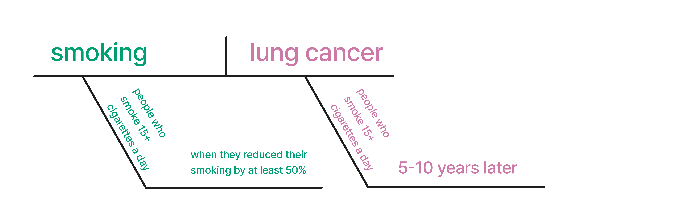

1 What is a causal question?
1.1 Schrödinger’s Causality
The heart of causal analysis is the causal question; it dictates what data we analyze, how we analyze it, and to which populations our inferences apply. This book, being applied in nature, deals primarily with the analysis stage of causal inference. Relative to the complexity of specifying a good causal question, the analysis stage is considerably more straightforward. In the first six chapters of this book, we’ll discuss what a causal question is, how to improve our questions, and consider some examples.
Causal questions are part of a broader set of questions we can ask with statistical techniques related to the primary tasks of data science: description, prediction, and causal inference (Hernán, Hsu, and Healy 2019). Unfortunately, these tasks are often muddled by the techniques we use (regression, for instance, is helpful for all three tasks) and how we talk about them. When researchers are interested in causal inference from non-randomized data, we often use euphemistic language like “association” instead of declaring our intent to estimate a causal effect (Hernán 2018).
In a recent study of the language of analyses in epidemiologic research, for instance, the most common root word describing the estimated effect was “associate,” but many researchers also felt that “associate” implied at least some causal effect (Figure fig-word-ranking) (Haber et al. 2022). Only around 1% of the studies analyzed used the root word “cause” at all. Yet, a third of studies had action recommendations, and researchers rated 80% of these recommendations as having at least some causal implication. Often, these studies have stronger action recommendations (alluding to causal effects) than those implied by the description of the effect (root words like “associate” and “compare”). Despite how many studies implied that the goal was causal inference, only about 4% used formal causal models like those discussed in this book. However, most discussed how such a cause might be justified by previous research or theory.
Instead of clear questions with obvious assumptions and goals, we end up with “Schrödinger’s causal inference”:
Our results suggest that “Schrödinger’s causal inference,” — where studies avoid stating (or even explicitly deny) an interest in estimating causal effects yet are otherwise embedded with causal intent, inference, implications, and recommendations — is common.
— Haber et al. (2022)
1.2 Description, prediction, and explanation
An excellent first step to address this problem is recognizing that questions about description, prediction, and explanation are fundamentally different. Data science in industry isn’t quite as burdened by Schrödinger’s causal inference as the academic sciences, but being explicit in the differences in analytic intent is still helpful. For instance, when a stakeholder asks for “drivers” of a particular event, what are they asking? For a model to predict the event? For a deeper understanding of what causes the event? It’s a vague request, but it smacks of causal interest to us. When we’re clear about our goals, we can use all three approaches more effectively (and, as we’ll see, both descriptive analysis and prediction models are still helpful when the goal is to make causal inferences). Moreover, all three approaches are useful decision-making tools.
1.2.1 Description
Descriptive analysis aims to describe the distribution of variables, often stratified by key variables of interest. A closely related idea is exploratory data analysis (EDA), although descriptive studies often have more explicit goals than those in EDA.
Descriptive analyses are usually based on statistical summaries such as measures of centrality (means, medians) and spread (minimums, maximums, quartiles), but they also occasionally use techniques like regression modeling. The goal of applying more advanced techniques like regression is different in descriptive analyses than in either predictive or causal studies. “Adjusting” for a variable in descriptive analyses means that we are removing its associational effect (and thus changing our question), not that we are controlling for confounding.
In epidemiology, a valuable concept for descriptive analyses is “person, place, and time” – who has what disease, where, and when. This concept is also a good template for descriptive analyses in other fields. Usually, we want to be clear about what population we’re trying to describe, so we need to be as specific as possible. For human health, describing the people involved, the location, and the period are all critical. In other words, focus on the first principles of generating understanding of your data and describe your data accordingly.
1.2.1.1 Examples
Counting things is one of the best things we can do with data. EDA benefits both predictive and causal analyses, but descriptive analyses are valuable independent of the other analysis tasks. Ask any data scientist who thought they’d be developing complex machine learning models and found themselves spending most of their time on dashboards. Understanding the distributions of the data, particularly for key analysis goals (say, KPIs in industry or disease incidence in epidemiology), is critical for many types of decision-making.
One of the best recent examples of descriptive analyses arose from the COVID-19 pandemic (Fox et al. 2022). In 2020, particularly in the early months of the pandemic, descriptive analyses were vital to understanding risk and allocating resources. Since the coronavirus is similar to other respiratory diseases, we had many public health tools to reduce risk (e.g., distancing and, later, face masks). Descriptive statistics of cases by region were vital for deciding local policies and the strength of those policies.
A great example of a more complex descriptive analysis during the pandemic was an ongoing report by the Financial Times of expected deaths vs. observed deaths in various countries and regions1. While the calculation of expected deaths is slightly more sophisticated than most descriptive statistics, it provided a tremendous amount of information about current deaths without needing to untangle causal effects (e.g., were they due to COVID-19 directly? Inaccessible healthcare? Cardiovascular events post-COVID?). In this (simplified) recreation of their plot from July 2020, you can see the staggering effect of the pandemic’s early months.

Here are some other great examples of descriptive analyses.
- Deforestation around the world. Our World in Data (Ritchie and Roser 2021) is a data journalism organization that produces thoughtful, usually descriptive reports on various topics. In this report, they present data visualizations of both absolute change in forest coverage (forest transitions) and relative change (deforestation or reforestation), using basic statistics and forestry theory to present helpful information about the state of forests over time.
- The prevalence of chlamydial and gonococcal infections (Miller 2004). Measuring the prevalence of disease (how many people currently have a disease, usually expressed as a rate per number of people) is helpful for basic public health (resources, prevention, education) and scientific understanding. In this study, the authors conducted a complex survey meant to be representative of all high schools in the United States (the target population); they used survey weights to address a variety of factors related to their question, then calculated prevalence rates and other statistics. As we’ll see, weights are helpful in causal inference for the same reason: targeting a particular population. That said, not all weighting techniques are causal in nature, and they were not here.
- Estimating race and ethnicity-specific hysterectomy inequalities (Gartner et al. 2020). Descriptive techniques also help us understand disparities in areas like economics and epidemiology. In this study, the authors asked: Does the risk of hysterectomy differ by racial or ethnic background? Although the analysis is stratified by a key variable, it’s still descriptive. Another interesting aspect of this paper is the authors’ work ensuring the research answered questions about the right target population. Their analysis combined several data sources to better estimate the true population prevalence (instead of the prevalence among those in hospitals, as commonly presented). They also adjusted for the prevalence of hysterectomy, e.g., they calculated the incidence (new case) rate only among those who could actually have a hysterectomy (e.g., they hadn’t had one yet).
1.2.1.2 Validity
There are two critical validity issues in descriptive analyses: measurement and sampling errors.
Measurement error is when we have mismeasured one or more variables in some capacity. For descriptive analyses, mismeasuring things means we may not get the answer to our question. However, the degree to which that is the case depends on both the severity of the measurement error and the question itself.
Sampling error is a more nuanced topic in descriptive analyses. It’s related to the population we’re analyzing (who should the analysis produce descriptions about) and uncertainty (how certain are we that the descriptions of those we have data for represent the population we’re trying to describe.).
The population from which our data come and the population we’re trying to describe must be the same for us to provide valid descriptions. Consider a dataset generated by an online survey. Who are the people who are answering these questions, and how do they relate to the people we want to describe? For many analyses, the people who take the time to answer surveys are different than the people we want to describe, e.g., the group of people who fill out surveys may have a different distribution of variables than those who don’t. Results from data like these are not technically biased because, outside of sample size-related uncertainty and measurement error, the descriptions are accurate—they’re just not for the right group of people! In other words, we’ve gotten an answer to the wrong question.
Notably, sometimes our data represent the entire population (or close enough) that sampling error is irrelevant. Consider a company with certain data on every customer using their service. For many analyses, this represents the entire population (current customers) about whom we want information. Similarly, in countries with population-wide health registries, the data available for specific practical purposes is close enough to the entire population that no sampling is needed (although researchers might use sampling for simpler computations). In these cases, there’s not really such a thing as uncertainty. Assuming everything is well-measured, the summary statistics we generate are inherently unbiased and precise because we have information from everyone in the population. Of course, in practice, we usually have some mixture of measurement error, missing data, and so on, even in the best of circumstances.
One crucial detail of descriptive analysis is that confounding bias, one of the chief concerns of this book, is undefined. That’s because confounding is a causal concern. Descriptive analyses cannot be confounded because they are a statistical description of relationships as-is, not the mechanisms behind those relationships.
1.2.1.3 Relationship to causal inference
Humans see patterns very well. Pattern-finding is a helpful feature of our brains, but it can also lead down a slippery slope of inference when we’re not working with data or methods that can allow us to do that validly. The biggest thing to be cautious of when your goal is to describe is making the leap from description to causation (implicitly or explicitly).
But, of course, descriptive analysis is helpful when we are estimating causal effects. It helps us understand the population we’re working with, the distribution of the outcomes, exposures (variables we think might be causal), and confounders (variables we need to account for to get unbiased causal effects for the exposure). It also helps us be sure that the data structure we’re using matches the question we’re trying to answer, as we’ll see in Chapter sec-data-causal. You should always do descriptive analyses of your data when conducting causal research.
Finally, as we’ll see in Chapter sec-trials-std, there are certain circumstances where we can make causal inferences with basic statistics. Be cautious about the distinction between the causal question and the descriptive component here, too: just because we’re using the same calculation (e.g., a difference in means) doesn’t mean that all descriptions you can generate are causal. Whether a descriptive analysis overlaps with a causal analysis is a function of the data and the question.
1.2.2 Prediction
The goal of prediction is to use data to make accurate predictions about variables, usually on new data. What this means depends on the question, domain, and so on. Prediction models are used in about every setting imaginable, from peer-reviewed clinical models to bespoke machine learning models embedded in consumer devices. Even large language models like the ones ChatGPT is based on are prediction models: they predict what a response to a prompt would look like.
Predictive modeling generally uses a different workflow than the workflow for causal modeling we’ll present in this book. Since the goal of prediction is usually related to making predictions on new data, the workflow of this type of modeling focuses on maximizing predictive accuracy while retaining generalization to new data, sometimes called the bias-variance trade-off. In practice, this means splitting your data into training sets (the part of the data you build your model on) and test sets (the part you assess your model with, a proxy for how it would perform on new data). Usually, data scientists use cross-validation or other sampling techniques to reduce further the risk of overfitting your model to the training set.
There are many excellent texts on predictive modeling, and so we refer you to those for a deeper exploration of the goals and methods of these techniques (Kuhn and Johnson 2013; Harrell 2001; Kuhn and Silge 2022; James et al. 2022).
1.2.2.1 Examples
Prediction is the most popular topic in data science, largely thanks to machine learning applications in industry. Prediction, of course, has a long history in statistics, and many models popular today have been used for decades in and outside academia.
Let’s look at an example of prediction about COVID-19 2. In 2021, researchers published the ISARIC 4C Deterioration model, a clinical prognostic model for predicting severe adverse outcomes for acute COVID-19 (Gupta et al. 2021). The authors included a descriptive analysis to understand the population from which this model was developed, particularly the distribution of the outcome and candidate predictors. One helpful aspect of this model is that it uses items commonly measured on day one of COVID-related hospitalization. The authors built this model using cross-validation by region of the UK and then tested the model on data from a hold-out region. The final model included eleven items and a description of their model attributes, relation with the outcome, and so on. Notably, the authors used clinical domain knowledge to select candidate variables but did not fall into the temptation of interpreting the model coefficients as causal. Without question, some of the predictive value of this model stems from the causal structure of the variables as they relate to the outcome, but the researchers had a different goal entirely for this model and stuck to it.
Here are other good examples from the predictive space:
Some of the most exciting work in predictive modeling is in industry. Netflix regularly shares details on their modeling success and novel strategies in their research blog. They also recently published a paper reviewing their use of deep learning models for recommender systems (in this case, recommending shows and movies to users) (Steck et al. 2021). The authors explain their experimentation with models, the details of those models, and many of the challenges they faced, resulting in a practical guide on using such models.
In early 2020, researchers experienced with predictive and prognostic modeling in health research published a review of models for diagnosis and prognosis of COVID-19 (Wynants et al. 2020). This review is interesting not just for its breadth but also the astounding number of models that were rated as poor quality: “[232] models were rated at high or unclear risk of bias, mostly because of non-representative selection of control patients, exclusion of patients who had not experienced the event of interest by the end of the study, high risk of model overfitting, and unclear reporting.” This research is also a living review.
1.2.2.2 Validity
The key measure of validity in prediction modeling is predictive accuracy, which can be measured in several ways, such as root mean squared error (RMSE), mean absolute error (MAE), area under the curve (AUC), and many more. A convenient detail about predictive modeling is that we can often assess if we’re right, which is not true of descriptive statistics for which we only have a subset of data or causal inference for which we don’t know the true causal structure. We aren’t always able to assess against the truth, but it’s almost always required for fitting the initial predictive model 3.
Measurement error is also a concern for predictive modeling because we usually need accurate data for accurate predictions. Interestingly, measurement error and missingness can be informative in predictive settings. In a causal setting, this might induce bias, but predictive models can consume that information with no issue. For instance, in the famous Netflix Prize, winning models leveraged information about whether or not a customer rated a movie at all to improve recommendation systems.
Like descriptive analysis, confounding is undefined for predictive modeling. A coefficient in a prediction model cannot be confounded; we only care about whether or not the variable provides predictive information, not if that information is because of a causal relationship or something else.
1.2.2.3 Relationship to causal inference
The single biggest risk in prediction is to assume that a given coefficient in a model has a causal interpretation. There is a good chance that this isn’t so. A model may predict well but may also have completely biased coefficients from a causal point of view. We’ll see more about this in sec-pred-or-explain and the rest of the book.
Often, people mistakenly use methods for selecting features (variables) for prediction models to select confounders in causal models. Aside from their risk of overfitting, these methods are appropriate for prediction models but not for causal models. Prediction metrics cannot determine the causal structure of your question, and predictive value for the outcome does not make a variable a confounder. In general, background knowledge (not prediction or associational statistics) should help you select variables for causal models Robins and Wasserman (1999); we’ll discuss this process in detail in Chapter sec-dags and Chapter sec-building-models.
Prediction is nevertheless crucial to causal inference. From a philosophical perspective, we’re comparing predictions from different what if scenarios: What would the outcome had one thing happened vs. if another thing happened? We’ll spend much time on this subject, particularly in Chapter sec-counterfactuals. We’ll also talk a lot about prediction from a practical perspective: just like in prediction and some description, we’ll use modeling techniques to answer causal questions. Techniques like propensity score methods and g-computation use model predictions to answer causal questions, but the workflow for building and interpreting the models themselves are quite different.
1.2.3 Causal Inference
The goal of causal inference is to understand the impact that a variable, sometimes called an exposure, has on another variable, sometimes called an outcome. “Exposure” and “outcome” are the terms we’ll use in this book to describe the causal relationship we’re interested in. Importantly, our goal is to answer this question clearly and precisely. In practice, this means using techniques like study design (e.g., a randomized trial) or statistical methods (like propensity scores) to calculate an unbiased effect of the exposure on the outcome.
As with prediction and description, it’s better to start with a clear, precise question to get a clear, precise answer. In statistics and data science, particularly as we swim through the ocean of data of the modern world, we often end up with an answer without a question (e.g., 42). This, of course, makes interpretation of the answer difficult. In sec-diag, we’ll discuss the structure of causal questions. We’ll discuss philosophical and practical ways to sharpen our questions in Chapter sec-counterfactuals and Chapter sec-trials-std.
Causal inference and explanation
Some authors use the phrases “causal inference” and “explanation” interchangeably. We’re a little more cautious about that. Causal inference always has a relationship to explanation, but we can accurately estimate the effect of one thing on another without understanding how it happens.
Consider John Snow, the so-called father of epidemiology. In 1854, Snow famously investigated a cholera outbreak in London and identified that specific water sources were to blame for the disease. He was right: contaminated water was a mechanism for cholera transmission. Yet, he didn’t have enough information to explain how: Vibrio cholerae, the bacteria responsible for cholera, wasn’t identified until nearly thirty years later.
1.2.3.1 Examples
We’ll see many examples of causal inference in this book, but let’s continue with an example related to COVID-19. As the pandemic continued and tools like vaccines and anti-viral treatments became available, policies like universal masking also began to change. In February 2022, the US state of Massachusetts rescinded a statewide policy that required universal masking in public schools (Cowger et al. 2022). In the greater Boston area, some school districts continued the policy while others discontinued it; those that discontinued it also did so at different times over the following weeks after the policy change. This difference in policy allowed researchers to take advantage of the differences in district policies over this period to study the impact of universal masking on COVID-19 cases. The researchers included a descriptive analysis of the school districts to understand the distribution of factors related to COVID-19 and other determinants of health. To estimate the effect of universal masking on cases, the authors used a technique common in policy-related causal inference called difference-in-differences to estimate this effect. Their design alleviates some problematic assumptions needed for causal inference, but they also wisely controlled for potential confounders despite that advantage. The authors found that districts that continued masking saw a drastically lower caseload than those that didn’t; their analysis concluded that almost 12,000 additional cases occurred due to the policy change, nearly 30% of the cases in the districts during the 15 weeks of the study.
Here are a few other interesting examples:
Netflix regularly uses causal inference in their work. In 2022, they published a blog post summarizing some causal tasks they have engaged with. One interesting example is localization. Netflix, being worldwide, localizes content through subtitles and dubbing. Randomized experiments were a bad idea because they meant withholding content from users, so researchers at Netflix used several approaches to understand the value of localization while addressing potential confounding. One example is studying the impact of pandemic-related delays in dubbing. Researchers used synthetic controls to simulate the impact on viewership with and without these delays. Presumably, the timing of the pandemic-related delays was unrelated to many factors that would typically be related to dubbing processes, thus reducing some of the potential confounding.
The Tuskegee Study is one of modern history’s most infamous examples of medical abuse. It is commonly pointed to as a source of distrust in the medical community from Black Americans. Health economics researchers used a variation of difference-in-difference techniques to assess the effect of the Tuskegee Study on distrust and life expectancy in older Black men (Alsan and Wanamaker 2017). The results are important and disturbing: “We find that the disclosure of the study in 1972 is correlated with increases in medical mistrust and mortality and decreases in both outpatient and inpatient physician interactions for older black men. Our estimates imply life expectancy at age 45 for black men fell by up to 1.5 years in response to the disclosure, accounting for approximately 35% of the 1980 life expectancy gap between black and white men and 25% of the gap between black men and women.”
1.2.3.2 Validity
Making valid causal inferences requires several assumptions that we’ll discuss in sec-assump. Unlike prediction, we generally cannot confirm that our causal models are correct. In other words, most assumptions we need to make are unverifiable. We’ll come back to this topic time and time again in the book—from the basics of these assumptions to practical decision-making to probing our models for problems.
1.2.4 Why isn’t the right causal model just the best prediction model?
At this point, you may wonder why the right causal model isn’t just the best prediction model. It makes sense that the two would be related: naturally, things that cause other things would be predictors. It’s causality all the way down, so any predictive information is related, in some capacity, to the causal structure of the thing we’re predicting. Doesn’t it stand to reason that a model that predicts well is causal, too? It’s true that some predictive models can be great causal models and vice versa. Unfortunately, this is not always the case; causal effects needn’t predict particularly well, and good predictors needn’t be causally unbiased (Shmueli 2010). There is no way to know using data alone.
Let’s look at the causal perspective first because it’s a bit simpler. Consider a causally unbiased model for an exposure but only includes variables related to the outcome and the exposure. In other words, this model provides us with the correct answer for the exposure of interest but doesn’t include other predictors of the outcome (which can sometimes be a good idea, as discussed in sec-data-causal). If an outcome has many causes, a model that accurately describes the relationship with the exposure likely won’t predict the outcome very well. Likewise, if a true causal effect of the exposure on the outcome is small, it will bring little predictive value. In other words, the predictive ability of a model, whether high or small, can’t help us distinguish if the model is giving us the correct answer. Of course, low predictive power might also indicate that a causal effect isn’t much use from an applied perspective, although that depends on several statistical factors.
There are two more complex reasons that predictive models won’t always be unbiased causal models. For the first reason, let’s consider an accurate model from a causal perspective: it estimates effects on an outcome, and all of these effects are unbiased. Even in this ideal setting, you might get better predictions using a different model. The reason has to do with the bias-variance trade-off in predictive modeling. When effects are small, data are noisy, predictors are highly correlated, or there’s not much data, using a biased model like penalized regression might make sense. These models intentionally introduce bias in favor of improved variance in out-of-data predictions. Since the goals of prediction and causal inference are different (accurate predictions, usually for out-of-data observations vs. an unbiased effect), the best model for inference is not necessarily the best prediction model.
Secondly, variables that are biased from a causal perspective often bring along with them predictive power. We’ll discuss which variables to include and not include in your models in sec-dags, but let’s consider a simple example. One of the famous examples of confounded relationships is ice cream sales and crime in the summer. Descriptively, ice cream sales and crime are related, but this relationship is confounded by weather, e.g., both ice cream sales and crime increases when it’s warmer. (This is simplistic, of course, as weather itself doesn’t cause crime, but it’s on the causal pathway.)
Consider a thought experiment where you are in a dark room. Your goal is to predict crime, but you don’t know the weather or time of year. You do, however, have information on ice cream sales. A model with ice cream sales on crime would be biased from a causal perspective—ice cream sales do not cause crime, even though the model would show an effect—but would provide some predictive value to your crime model. The reason for both of these conditions is the same: weather and ice cream sales are correlated, and so are weather and crime. Ice cream sales can successfully, if imperfectly, serve as a proxy for weather. That results in a biased effect estimate of the causal impact of ice cream sales on crime but a partially effective prediction of crime. Other variables, too, which are invalid from a causal perspective, either by being biased themselves or by introducing bias into the causal effect estimate, often bring good predictive value. Thus, predictive accuracy is not a good measure of causality.
A closely related idea is the Table Two Fallacy, so-called because, in health research papers, descriptive analyses are often presented in Table 1, and regression models are often presented in Table 2 (Westreich and Greenland 2013). The Table Two Fallacy is when a researcher presents confounders and other non-effect variables, particularly when they interpret those coefficients as if they, too, were causal. The problem is that in some situations, the model to estimate an unbiased effect of one variable may not be the same model to estimate an unbiased effect of another variable. In other words, we can’t interpret the effects of confounders as causal because they might themselves be confounded by another variable unrelated to the original exposure.
Descriptive, predictive, and causal analyses will always contain some aspect of each other. A predictive model gains some of its predictive power from the causal structure of the outcome, and a causal model has some predictive power because it contains information about the outcome. However, the same model in the same data with different goals will have different usefulness depending on those goals.
1.3 Diagraming a causal claim
Each analysis task, whether descriptive, predictive, or inferential, should start with a clear, precise question. Let’s diagram them to understand better the structure of causal questions (to which we’ll return our focus). Diagramming sentences is a grammatical method used to visually represent the structure of a sentence, occasionally taught in grammar school. In this technique, sentences are deconstructed into their constituent parts, such as subjects, verbs, objects, and modifiers, and then displayed using a series of lines and symbols. The arrangement of these elements on the diagram reflects their syntactic roles and how they interact within the sentence’s overall structure. By breaking down sentences into these visual representations, diagramming can help learners grasp the nuances of sentence construction, identify grammatical errors, and appreciate the intricate connections between words. We can apply a similar idea to causal claims. Here is an example of how one might diagram a causal claim. We’ve pulled out the cause, the effect, the subject (for whom?), and the timing (when?).

Let’s start with a basic causal question: Does smoking cause lung cancer?
The causal claim here could be that smoking causes lung cancer. Figure fig-diagram-2 shows a potential diagram of this causal claim.

Let’s get more specific. A study was published in JAMA (the Journal of the American Medical Association) in 2005 titled “Effect of Smoking Reduction on Lung Cancer Risk.” This study concluded: “Among individuals who smoke 15 or more cigarettes per day, smoking reduction by 50% significantly reduces the risk of lung cancer”. (Godtfredsen, Prescott, and Osler 2005) The study describes the time frame studied as 5-10 years. Let’s diagram this causal claim. Here, we assume that the eligibility criteria and the target population for the estimated causal effect are the same (individuals who smoke 15 or more cigarettes per day); this need not always be the case. In sec-estimands, we will discuss other potential target populations.

Translating this idea into asking good causal questions, we can map the following terms that you will see throughout this book to these diagrams: exposure (the cause), outcome (the effect), eligibility criteria (for whom?), time zero (when did the participants begin to be followed?), target population, (who can we estimate an outcome effect for?) and follow-up period (when?).

Asking good causal questions means we map the question to the observable evidence. Let’s return to the smoking example. Our initial question was: Does smoking cause lung cancer?; The evidence in the study shows: For people who smoke 15+ cigarettes a day, reducing smoking by 50% reduces the risk of lung cancer over 5-10 years. Does the answer match the question? Not quite. Let’s update our question to match what the study actually showed: For people who smoke 15+ cigarettes a day, does reducing smoking by 50% reduce the lung cancer risk over 5-10 years? Honing this skill — asking answerable causal questions — is essential and one we will discuss throughout this book.
Alsan, Marcella, and Marianne Wanamaker. 2017. “Tuskegee and the Health of Black Men*.” The Quarterly Journal of Economics 133 (1): 407–55. https://doi.org/10.1093/qje/qjx029.
Cowger, Tori L., Eleanor J. Murray, Jaylen Clarke, Mary T. Bassett, Bisola O. Ojikutu, Sarimer M. Sánchez, Natalia Linos, and Kathryn T. Hall. 2022. “Lifting Universal Masking in Schools Covid-19 Incidence Among Students and Staff.” New England Journal of Medicine 387 (21): 1935–46. https://doi.org/10.1056/nejmoa2211029.
Fox, Matthew P, Eleanor J Murray, Catherine R Lesko, and Shawnita Sealy-Jefferson. 2022. “On the Need to Revitalize Descriptive Epidemiology.” American Journal of Epidemiology 191 (7): 1174–79. https://doi.org/10.1093/aje/kwac056.
Gartner, Danielle R., Paul L. Delamater, Robert A. Hummer, Jennifer L. Lund, Brian W. Pence, and Whitney R. Robinson. 2020. “Integrating Surveillance Data to Estimate Race/Ethnicity-Specific Hysterectomy Inequalities Among Reproductive-Aged Women.” Epidemiology 31 (3): 385–92. https://doi.org/10.1097/ede.0000000000001171.
Godtfredsen, Nina S, Eva Prescott, and Merete Osler. 2005. “Effect of Smoking Reduction on Lung Cancer Risk.” Jama 294 (12): 1505–10.
Gupta, Rishi K, Ewen M Harrison, Antonia Ho, Annemarie B Docherty, Stephen R Knight, Maarten van Smeden, Ibrahim Abubakar, et al. 2021. “Development and Validation of the ISARIC 4C Deterioration Model for Adults Hospitalised with COVID-19: A Prospective Cohort Study.” The Lancet Respiratory Medicine 9 (4): 349–59. https://doi.org/10.1016/s2213-2600(20)30559-2.
Haber, N. A., S. E. Wieten, J. M. Rohrer, O. A. Arah, P. W. G. Tennant, E. A. Stuart, E. J. Murray, et al. 2022. “Causal and Associational Language in Observational Health Research: A Systematic Evaluation.” Am J Epidemiol 191 (12): 2084–97.
Harrell, Frank E. 2001. Multivariable Modeling Strategies. Springer New York. https://doi.org/10.1007/978-1-4757-3462-1_4.
Hernán, Miguel A. 2018. “The C-Word: Scientific Euphemisms Do Not Improve Causal Inference From Observational Data.” American Journal of Public Health 108 (5): 616–19. https://doi.org/10.2105/ajph.2018.304337.
Hernán, Miguel A., John Hsu, and Brian Healy. 2019. “A Second Chance to Get Causal Inference Right: A Classification of Data Science Tasks.” CHANCE 32 (1): 42–49. https://doi.org/10.1080/09332480.2019.1579578.
James, Gareth, Daniela Witten, Trevor Hastie, and Robert Tibshirani. 2022. An Introduction to Statistical Learning: With Applications in r. Springer.
Kuhn, Max, and Kjell Johnson. 2013. Applied Predictive Modeling. Springer New York. https://doi.org/10.1007/978-1-4614-6849-3.
Kuhn, Max, and Julia Silge. 2022. Tidy Modeling with r: A Framework for Modeling in the Tidyverse. O’Reilly.
Miller, William C. 2004. “Prevalence of Chlamydial and Gonococcal Infections Among Young Adults in the United States.” JAMA 291 (18): 2229. https://doi.org/10.1001/jama.291.18.2229.
Ritchie, Hannah, and Max Roser. 2021. “Forests and Deforestation.” Our World in Data.
Robins, J. M., and L. Wasserman. 1999. On the Impossibility of Inferring Causation from Association Without Background Knowledge. Edited by P. Glymour and G. Cooper. Menlo Park, CA, Cambridge, MA: AAAI Press, The MIT Press.
Shmueli, Galit. 2010. “To Explain or to Predict?” Statistical Science 25 (3). https://doi.org/10.1214/10-sts330.
Steck, Harald, Linas Baltrunas, Ehtsham Elahi, Dawen Liang, Yves Raimond, and Justin Basilico. 2021. “Deep Learning for Recommender Systems: A Netflix Case Study.” AI Magazine 42 (3): 7–18. https://doi.org/10.1609/aimag.v42i3.18140.
Westreich, D., and S. Greenland. 2013. “The Table 2 Fallacy: Presenting and Interpreting Confounder and Modifier Coefficients.” American Journal of Epidemiology 177 (4): 292–98. https://doi.org/10.1093/aje/kws412.
Wynants, Laure, Ben Van Calster, Gary S Collins, Richard D Riley, Georg Heinze, Ewoud Schuit, Elena Albu, et al. 2020. “Prediction Models for Diagnosis and Prognosis of Covid-19: Systematic Review and Critical Appraisal.” BMJ, April, m1328. https://doi.org/10.1136/bmj.m1328.